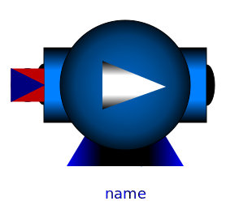

| Name | Description |
|---|---|
| varying cylindric volume depending on the position of the piston | |
| Centrifugal pump with mechanical connector for the shaft | |
| ControlledPump | Centrifugal pump with ideally controlled mass flow rate |
|  PrescribedPump | Centrifugal pump with ideally controlled speed |
| Base classes used in the Machines package (only of interest to build new component models) |